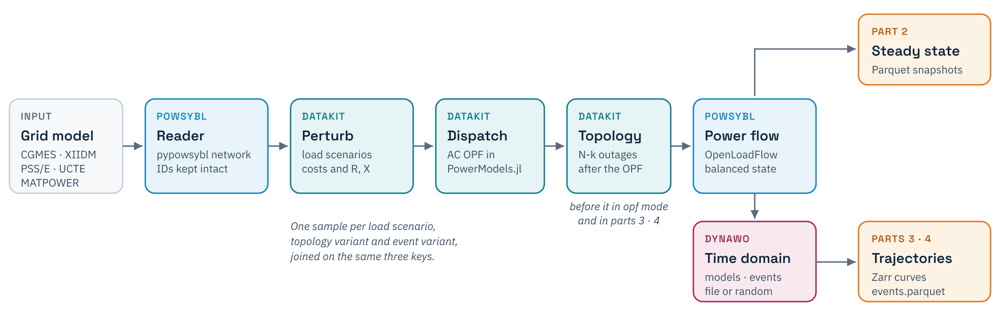

Two open-source simulators built for transmission system operators, and the role each one plays in GridFM-Datakit.
15 minPart 1 of 4pypowsybl · pypowsybl.dynamic
In this part
Place PowSyBl and Dynawo in the GridFM-Datakit pipeline.
Load a grid, solve a power flow and draw it with pypowsybl.
Move a grid between exchange formats and see what each one keeps.
Run a first Dynawo time-domain simulation from Python and plot it.
Two tools from the control room
Both projects started at RTE, the French transmission system operator, and are developed in the open. Operators use them for real operational and planning studies, which is what makes them interesting as a source of training data.
PowSyBl
Dynawo
What
Framework to model, exchange and simulate grids
Time-domain simulator, RMS (phasor)
Core
Java, with the Python binding pypowsybl
C++ solver, Modelica models compiled ahead of time
A foundation model learns what its data shows it. Datakit already produced large steady-state datasets from MATPOWER cases with PowerModels.jl. PowSyBl and Dynawo extend it in three directions.
Industrial grids in. PowSyBl reads the formats operators exchange every day, so a dataset can start from a realistic network instead of a textbook case.
Industrial-grade physics out. OpenLoadFlow and Dynawo are the solvers used on real operational studies, which narrows the gap between synthetic data and the field.
Time as a new modality. Dynawo turns each operating point into a trajectory, and randomized disturbances become a new axis of data augmentation.

The datakit pipeline. PowSyBl reads the grid and solves the power flow, Dynawo simulates the time domain.
NoteThe same identifiers everywhere
Every element keeps the ID it has in the network file, from the PowSyBl network to the Dynawo model mapping and the output tables. That is what lets a configuration file say “disconnect _GEN____2_SM at 1 s”.
PowSyBl in a few lines
The IEEE 14-bus case used throughout the dynamic parts ships as an XIIDM file, the native PowSyBl format.
import matplotlib.pyplot as pltimport pandas as pdimport pypowsybl as ppnetwork = pp.network.load("../data/ieee14/IEEE14.iidm")network.get_generators()[ ["name", "target_p", "target_v", "max_p", "voltage_regulator_on"]]
name
target_p
target_v
max_p
voltage_regulator_on
id
_GEN____1_SM
GEN 1
232.3463
73.140
9999.0
True
_GEN____2_SM
GEN 2
40.0000
72.105
9999.0
True
_GEN____3_SM
GEN 3
0.0000
69.690
9999.0
True
_GEN____6_SM
GEN 6
0.0000
14.766
9999.0
True
_GEN____8_SM
GEN 8
0.0000
15.042
9999.0
True
Every element type is a pandas DataFrame, and every attribute can be updated in place. A load flow with OpenLoadFlow fills in the voltages and the flows.
result = pp.loadflow.run_ac(network)print(result[0].status_text, "in", result[0].iteration_count, "iterations")network.get_buses()[["v_mag", "v_angle"]].round(2).head()
Converged in 3 iterations
v_mag
v_angle
id
_BUS___10_VL_0
14.50
-4.78
_BUS___11_VL_0
14.59
-4.48
_BUS___12_VL_0
14.56
-4.76
_BUS___13_VL_0
14.50
-4.84
_BUS___14_VL_0
14.29
-5.72
PowSyBl models equipment in detail, and OpenLoadFlow can control it. On a copy of the grid, the ratio tap changer of the transformer between buses 4 and 9 starts at its lowest tap and regulates the voltage of bus 9 to 14.3 kV.
The load flow leaves tap at its set value and reports the position it chose in solved_tap_position. The base case network is untouched, so the rest of this part runs on the original grid.
PowSyBl also draws the grid. The network area diagram shows each voltage level with its flows.
network.get_network_area_diagram()
Scroll to zoom, drag to pan.
Exchange formats
European operators exchange grid models as CGMES, the Common Grid Model Exchange Standard. PowSyBl writes and reads it, as well as its own XIIDM format. A round trip shows what each one keeps. It runs on the PEGASE 89-bus case of PGLib, the grid of Part 2, which GridFM-Datakit’s PowSyBl reader turns from a MATPOWER file into a pypowsybl network.
A MATPOWER case rates its branches in apparent power. CGMES 2.4.15 holds apparent power limits in its Equipment Operation profile, which PowSyBl does not write for a bus-branch model like this one, so they are lost. CGMES 3 moved them into the core equipment profile and keeps them, but two buses go missing on the way back. XIIDM keeps everything, so that is the file GridFM-Datakit gets in Part 2. A CGMES file from an operator, whose limits are currents, goes in the same way.
A first Dynawo simulation
pypowsybl.dynamic drives Dynawo with three mappings. Models attach a dynamic model to a static element, events say what happens and when, and output variables say what to record. The physical parameters of each model come from a .par file, referenced by a parameter set ID.
import pypowsybl.dynamic as dynmodels_table = pd.read_csv("../data/ieee14/static_element_dynamic_models.csv")machines = models_table.query("category_name == 'SynchronousGenerator'")machines
category_name
static_id
parameter_set_id
model_name
0
SynchronousGenerator
_GEN____1_SM
Generator1
GeneratorSynchronousFourWindingsProportionalRe...
1
SynchronousGenerator
_GEN____2_SM
Generator2
GeneratorSynchronousFourWindingsProportionalRe...
2
SynchronousGenerator
_GEN____3_SM
Generator3
GeneratorSynchronousFourWindingsProportionalRe...
3
SynchronousGenerator
_GEN____6_SM
Generator6
GeneratorSynchronousThreeWindingsProportionalR...
4
SynchronousGenerator
_GEN____8_SM
Generator8
GeneratorSynchronousThreeWindingsProportionalR...
The five machines get a synchronous generator model. Loads and other elements keep Dynawo’s default model.
The curves come back as one DataFrame indexed by time.
curves = result.curves()curves.index = (curves.index - curves.index[0]).total_seconds()fig, (ax_u, ax_w) = plt.subplots(1, 2, figsize=(11, 4))ax_u.plot(curves.index, curves["NETWORK__BUS____4_TN_U_value"], color=PALETTE[0])ax_u.set(title="Voltage at bus 4", xlabel="time (s)", ylabel="kV")for i, gen inenumerate(machines.static_id): ax_w.plot( curves.index, curves[f"{gen}_generator_omegaPu_value"], color=PALETTE[i], label=gen.strip("_").replace("____", " ").replace("_SM", ""), )ax_w.set(title="Rotor speed", xlabel="time (s)", ylabel="pu")ax_w.legend(ncols=2)fig.tight_layout()
The fault collapses the voltage at bus 4, and the rotor speeds of the machines swing, then settle. This is one trajectory. Parts 3 and 4 produce thousands of them, each from a different operating point and a different disturbance.
Your turn
TipExercise · Trip a generator
Replace the fault by the disconnection of generator 2 at 1 s with events.add_disconnection(static_id=..., start_time=...). Run the simulation for 30 s and plot the rotor speed of generator 1. How does the response differ from the fault?
Losing a machine is a lasting power imbalance. The speed drops and settles at a new value set by the governors, where a cleared fault leaves the system where it started.
NoteNext
Part 2 feeds the PEGASE grid through PowSyBl into datakit and builds a steady-state dataset.